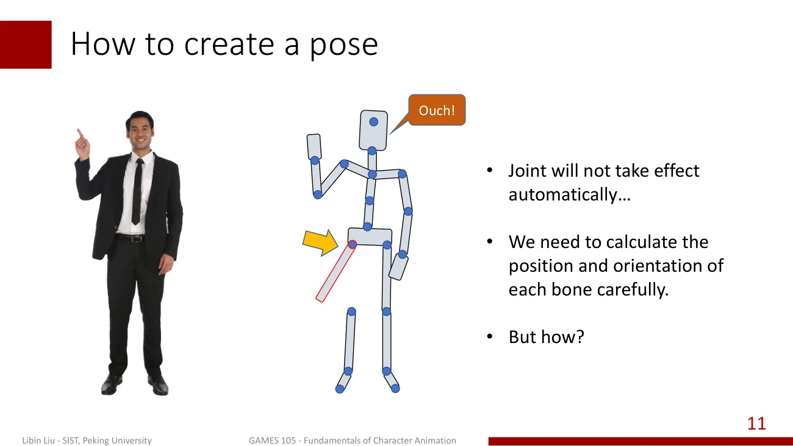
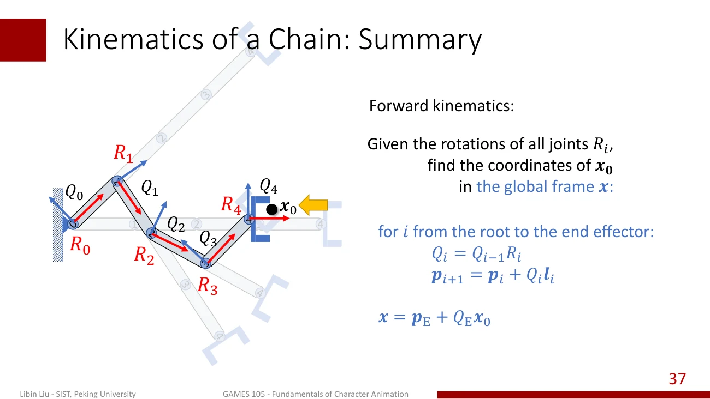
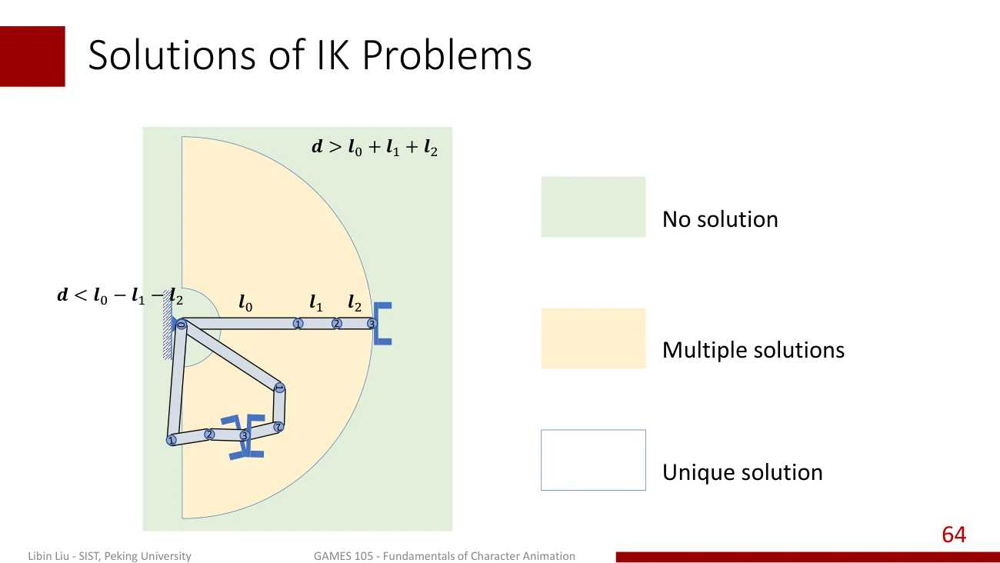
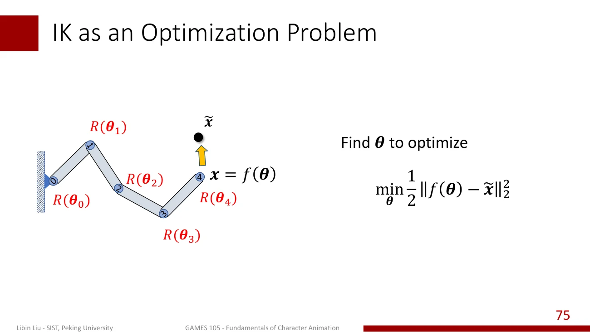
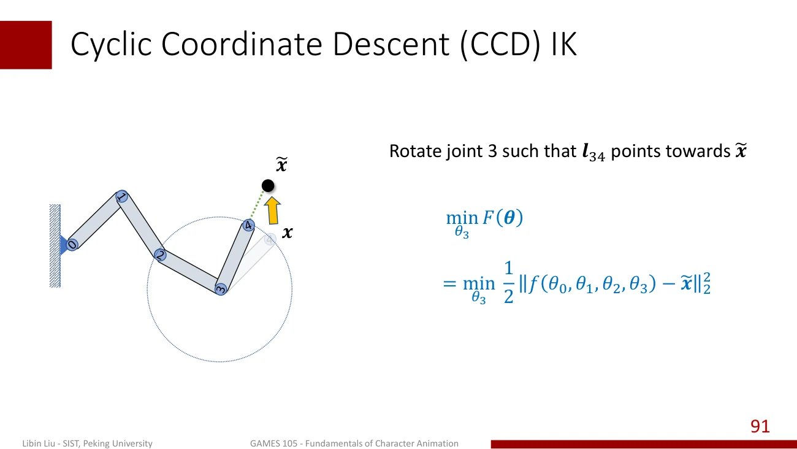
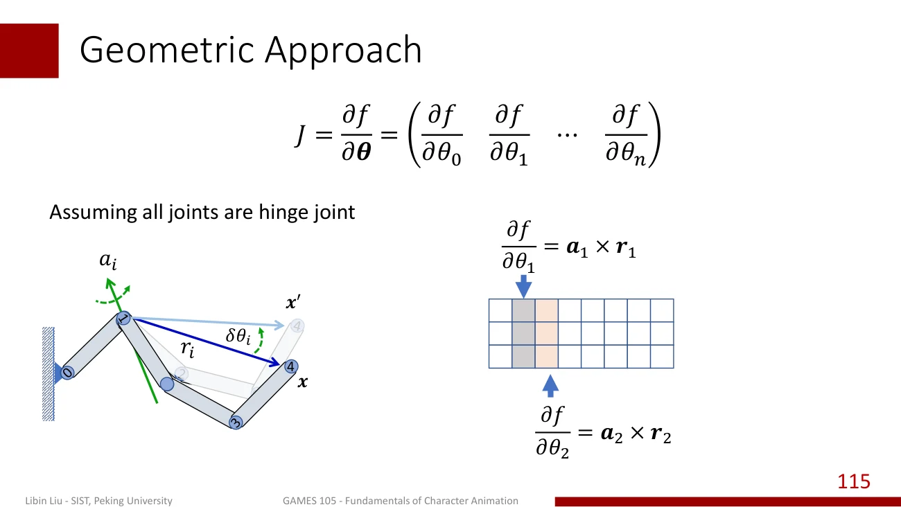
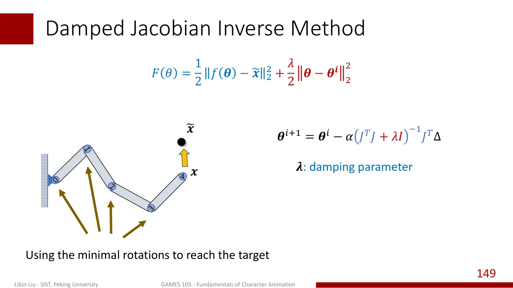

第 3 讲：角色运动学——正向运动学与逆向运动学
从骨架的旋转链出发，讲清如何由关节旋转算出末端位置（FK），以及如何由目标位置反推关节旋转（IK），并把 IK 统一成优化问题与迭代求解。
◆ 学完这一讲，你应该能
能说清骨架、关节、骨骼、末端执行器（end effector）之间的关系，以及为什么关节旋转不会自动改变姿态。
能写出并解释正向运动学（FK）的递推公式：全局朝向 \(Q_i = Q_{i-1} R_i\) 与全局位置 \(\boldsymbol{p}_i = \boldsymbol{p}_{i-1} + Q_{i-1}\boldsymbol{l}_i\)。
能说明逆向运动学（IK）为什么是多解/无解问题，并会用两关节解析法手算一个简单 IK。
能把 IK 写成最小化目标函数 \(F(\boldsymbol{\theta}) = \|f(\boldsymbol{\theta}) - \tilde{\boldsymbol{x}}\|^2\)，并解释迭代优化、坐标下降（CCD）、梯度下降、Jacobian 转置、Gauss-Newton、Jacobian 逆/伪逆、阻尼最小二乘各自在做什么。
能区分有限差分法与几何法求 Jacobian，知道球关节（ball joint）如何处理。
能在 UE/Unity 中把 FK/IK 概念对应到动画蓝图、Control Rig、Two Bone IK 等实际工具上。
核心结论速记
角色姿态由根节点平移加各关节旋转共同决定；关节旋转必须通过运动学计算才能变成可见的骨骼位置。
FK 是“已知所有关节旋转，求末端位置”，沿链从根到末端递推：朝向累乘、位置累加。
IK 是“已知末端目标位置，求关节旋转”，本质是求解 \(f(\boldsymbol{\theta}) = \tilde{\boldsymbol{x}}\)，通常无解析解、可能多解或无解。
IK 的通用做法是把它变成优化问题：最小化末端与目标的距离平方，再用迭代算法逼近。
CCD 每次只转一个关节，让该关节到末端的向量指向目标，简单但收敛慢、结果依赖关节顺序。
梯度下降沿负梯度方向更新；Jacobian 转置法用 \(J^T \Delta\) 作为更新方向，不需要求逆。
Gauss-Newton 用一阶近似把问题变成线性最小二乘，得到 \(J^T J \Delta\boldsymbol{\theta} = -J^T \Delta\boldsymbol{x}\)；当 \(J^T J\) 不可逆时用阻尼或伪逆。
Jacobian 可用有限差分逐参数扰动求得，也可用几何法（旋转轴叉乘末端相对位置）直接写出，后者更快更准。
011. 骨架、关节与“为什么转了关节却没动”
角色动画里的“运动学（kinematics）”只关心几何运动本身，不关心力和质量——用课件里的定义：研究物体运动而不考虑受力。所以这一讲我们只谈位置、朝向、旋转，不谈物理。 \n一个角色（character）在引擎里通常由骨架（skeleton）驱动。骨架由关节（joint）和连接它们的骨骼/连杆（bone / link）组成。关节是旋转发生的地方，骨骼是两关节之间的刚性段。链条的起点叫根关节（root joint），链条末端我们关心的那个点叫末端执行器（end effector），比如脚踝、手腕。 \n初学者最常见的困惑是：我在 DCC 里把大腿关节转了一下，为什么脚没有跟着动？因为关节的旋转只是一个局部参数，它本身不会自动传播。要得到脚在世界空间里的位置，必须沿着“根 → 髋 → 膝 → 踝”把每一级的旋转和骨长累积起来算——这正是正向运动学（Forward Kinematics, FK）要做的事。课件用“我想转右腿，结果 Ouch！”的漫画强调：不做运动学计算，关节旋转不会自动生效。 \n这里还要区分两个概念：局部（local）与全局（global）。每个关节的旋转参数通常是相对父关节的局部旋转 \(R_i\)，而我们在世界空间里看到的是全局朝向 \(Q_i\)。FK 的核心任务就是把一串局部旋转变成全局朝向和全局位置。

常见坑
把局部旋转直接当成世界旋转用 → 姿态整体错位 → 检查是否漏乘了父关节的全局朝向 \(Q_{i-1}\)。
以为关节旋转会自动带动子骨骼 → 脚不动 → 确认动画系统是否在每帧执行 FK 更新。
UE / Unity 落地
UE：Skeletal Mesh 的骨骼层级就是这里的关节链；动画蓝图里每个骨骼的 Transform 是局部量，最终由引擎做 FK 合成。
Unity：Animator 中的骨骼 Transform 是局部旋转，Skinned Mesh Renderer 依赖层级变换做 FK。
022. 正向运动学：朝向累乘、位置累加
设第 \(i\) 个关节的局部旋转为 \(R_i\)，它相对父关节的骨长为 \(\boldsymbol{l}_i\)（在父关节局部坐标下表示）。课件给出的递推关系是：
\[\nQ_i = Q_{i-1} R_i \] \[ \boldsymbol{p}_i = \boldsymbol{p}_{i-1} + Q_{i-1} \boldsymbol{l}_i \] \n其中 \(Q_i\) 是关节 \(i\) 的全局朝向，\(\boldsymbol{p}_i\) 是关节 \(i\) 的全局位置。直觉上：朝向是“一路乘过去”，位置是“上一节的位置 + 上一节的朝向把骨长转过去”。注意位置用的是 \(Q_{i-1}\) 而不是 \(Q_i\)，因为骨长 \(\boldsymbol{l}_i\) 是从父关节出发、在父关节坐标系下量的。 \n如果末端执行器在最后一个关节局部坐标下是 \(\boldsymbol{x}_{local}\)，那么它的全局位置是：
\[ \boldsymbol{x} = \boldsymbol{p}_n + Q_n \boldsymbol{x}_{local} \] \n把递推展开，就得到课件里那条长长的求和式：末端位置等于根位置加上每一段骨长被对应全局朝向旋转后的累加。这就是 FK 的完整答案：给定所有 \(R_i\)，能唯一算出末端位置。 \n工程上，BVH 这类动作捕捉文件存的就是每个关节的局部旋转通道（rotation channels）和根节点平移通道（position channels），播放时逐帧做上述递推即可。

常见坑
位置递推误用 \(Q_i\) 乘骨长 → 末端位置偏移一个关节的旋转 → 确认骨长是在父关节坐标系下定义的。
旋转顺序搞反写成 \(R_i Q_{i-1}\) → 姿态扭曲 → 矩阵乘法不交换，局部旋转必须右乘在父朝向之后。
骨长向量没归一化或单位不统一 → 角色比例错误 → 统一用米或厘米并检查导入缩放。
UE / Unity 落地
UE：动画蓝图的 Pose 节点内部就是逐骨骼 FK；Control Rig 里可以直接读取每根骨骼的全局 Transform。
Unity：Transform 层级天然做 FK；Humanoid Avatar 会把肌肉空间映射回骨骼局部旋转。
FK 递推伪代码（cpp）
// Q[i]: 全局朝向, p[i]: 全局位置, R[i]: 局部旋转, l[i]: 父关节系下骨长\nQ[0] = R[0];\np[0] = root_position;\nfor (int i = 1; i < n; ++i) {
Q[i] = Q[i-1] * R[i];
p[i] = p[i-1] + Q[i-1] * l[i];
}\nVector3 end = p[n-1] + Q[n-1] * x_local;033. 逆向运动学：从目标位置反推关节旋转
FK 是“旋转 → 位置”，IK 则反过来：给定末端执行器的目标位置 \(\tilde{\boldsymbol{x}}\)，求各关节旋转。课件用“手要够到桌上的杯子”这类例子说明需求：动画师不想手动摆每一根手指和手腕，只想把脚/手钉在一个点上，让系统自动解出关节角。 \nIK 比 FK 难，原因有三：
- 可能无解：如果目标点比整条链伸直还远（\(d > l_1 + l_2 + l_3\)），或者比最短折叠距离还近（\(d < |l_1 - l_2 - l_3|\)），关节怎么转都够不到。
- 可能多解：链越长，冗余自由度越多，同一末端位置对应无穷多组关节角。比如三节链够一个点，肘部可以朝上也可以朝下。
- 通常没有解析解：只有两关节这类简单情形能用手推公式，复杂角色必须数值求解。 \n课件的两关节解析解思路很直观：先转第一个关节，让“第一段骨长 + 第二段骨长”构成的三角形对准目标；再用余弦定理算出中间关节的弯曲角；最后转第二个关节让末端落到目标上。这个例子告诉我们：IK 的本质是几何约束求解，而一般情形下我们把它交给优化。

常见坑
目标点超出可达范围仍强行求解 → 关节被拉到极限或抖动 → 先做可达性判断，超出时钳制目标或让链伸直。
多解时结果随机跳变 → 肘部朝向不稳定 → 加关节限位或加“偏好姿态”正则项。
UE / Unity 落地
UE：Two Bone IK 节点就是两关节解析 IK，需要设置 Joint Target 来消除多解（决定膝盖朝向）。
Unity：Animation Rigging 包的 Two Bone IK Constraint 同样需要 hint 目标来稳定肘/膝方向。
044. 把 IK 写成优化问题
一般 IK 没有闭式解，课件把它统一成优化问题。定义目标函数为末端位置与目标位置之差的平方：
\[\nF(\boldsymbol{\theta}) = \| f(\boldsymbol{\theta}) - \tilde{\boldsymbol{x}} \|^2 \] \n其中 \(f(\boldsymbol{\theta})\) 就是第 2 节的 FK 函数，\(\boldsymbol{\theta}\) 收集了所有关节参数（根平移 \(\boldsymbol{t}\)、各关节旋转 \(R_1, R_2, \dots\)）。IK 就变成：
\[ \min_{\boldsymbol{\theta}} F(\boldsymbol{\theta}) \] \n这个视角的好处是：无解时它自动退化为“尽量靠近目标”的最小二乘解，不会崩；多解时可以通过加正则项选一个“最自然”的解。 \n求解用迭代算法：从一个初始姿态 \( \boldsymbol{\theta}_0 \)（通常是当前帧姿态）出发，每步找一个下降方向更新参数，直到梯度接近零或误差足够小。课件随后介绍的 CCD、梯度下降、Gauss-Newton 都是这个框架下的不同“找方向”策略。

常见坑
目标函数只写位置误差、忘了正则 → 关节角乱飞 → 加 \( \lambda \|\boldsymbol{\theta} - \boldsymbol{\theta}_0\|^2 \) 让解靠近初始姿态。
初始姿态离解太远 → 迭代陷入局部极小 → 用上一帧姿态热启动，或加随机重启。
UE / Unity 落地
UE：Control Rig 的 IK 求解器内部就是带阻尼的最小二乘优化，可设迭代次数与容差。
Unity：Animation Rigging 的 Chain IK 也是迭代求解，可调 max iterations 与 tolerance。
055. CCD 与梯度下降：两种“找方向”的直觉
循环坐标下降（Cyclic Coordinate Descent, CCD） 是最容易实现的 IK：从末端往根依次处理每个关节，每次只转这一个关节，使得“该关节到末端的向量”尽量指向目标 \(\tilde{\boldsymbol{x}}\)。因为只转一个关节时问题退化成一维，可以直接用向量夹角算出旋转量。转完一个关节再处理下一个，循环若干轮直到收敛。CCD 的优点是每步都有解析更新、不需要求导；缺点是收敛慢、结果依赖关节处理顺序，而且容易产生“卷曲”的不自然姿态。
梯度下降（Gradient Descent） 则从整体目标函数出发：
\[ \boldsymbol{\theta}_{i+1} = \boldsymbol{\theta}_i - \alpha \nabla_{\boldsymbol{\theta}} F(\boldsymbol{\theta}_i) \] \n即沿负梯度方向走一步，步长 \( \alpha \) 控制快慢。对 \(F = \|f(\boldsymbol{\theta}) - \tilde{\boldsymbol{x}}\|^2\)，梯度可以写成 \( J^T \Delta \) 的形式，其中 \(J = \partial f / \partial \boldsymbol{\theta}\) 是 Jacobian 矩阵，\(\Delta = f(\boldsymbol{\theta}) - \tilde{\boldsymbol{x}}\) 是当前末端误差。于是更新式变成：
\[ \boldsymbol{\theta}_{i+1} = \boldsymbol{\theta}_i - \alpha J^T \Delta \] \n这就是 Jacobian 转置法。它不需要求矩阵逆，计算便宜，但步长难调、收敛慢。

常见坑
CCD 关节顺序从根到末端 → 末端抖动、姿态卷曲 → 改为从末端往根处理，或限制每轮旋转角。
梯度下降步长 \( \alpha \) 太大 → 误差震荡不收敛 → 减小步长或做线搜索。
Jacobian 转置法在接近解时步子过大 → 越过最优 → 随迭代衰减步长。
UE / Unity 落地
UE：Control Rig 提供 CCDIK 与 FBIK 等求解器节点，可切换算法对比效果。
Unity：Animation Rigging 的 Chain IK 本质是迭代求解，CCD 可作为自定义约束实现。
066. Jacobian：有限差分与几何法
上面所有方法都绕不开 Jacobian 矩阵 \(J = \partial f / \partial \boldsymbol{\theta}\)。它的第 \(i\) 列表示“只动第 \(i\) 个关节参数时，末端位置怎么变”。对 \(n\) 个参数、三维末端，\(J\) 是 \(3 \times n\) 矩阵。 \n怎么算 \(J\)？课件给了两条路：
有限差分（Finite Differencing）：对每个参数 \( \theta_i \) 加一个小扰动 \( \delta \)，重新跑一次 FK，用 \( (f(\boldsymbol{\theta} + \delta \boldsymbol{e}_i) - f(\boldsymbol{\theta})) / \delta \) 近似该列。优点是实现极简、对任何关节类型都适用；缺点是要跑 \(n\) 次 FK，慢，且 \( \delta \) 选大了不准、选小了有数值误差。
几何法（Geometric Approach）：假设关节都是铰链关节（hinge joint），绕轴 \( \boldsymbol{a}_i \) 旋转。末端相对该关节的向量是 \( \boldsymbol{r}_i = \boldsymbol{x} - \boldsymbol{p}_i \)，那么该关节旋转对末端速度的贡献就是：
\[ \frac{\partial f}{\partial \theta_i} = \boldsymbol{a}_i \times \boldsymbol{r}_i \] \n也就是旋转轴叉乘末端相对位置。这个式子就是刚体上一点的速度公式，物理直觉非常清楚。对球关节（ball joint），可以把它拆成两个或三个正交铰链，分别用上述公式求列，再拼起来。几何法一次遍历就能填满整个 Jacobian，比有限差分快得多，是引擎里的常用做法。

常见坑
有限差分 \( \delta \) 取 1e-1 量级 → 导数严重失真 → 用 1e-5 左右并做中心差分。
几何法忘了把旋转轴转到世界空间 → Jacobian 列方向错误 → 轴 \( \boldsymbol{a}_i \) 必须是全局朝向下的轴。
球关节只当一个自由度处理 → 漏掉两个旋转方向 → 拆成多个铰链分别求列。
UE / Unity 落地
UE：Control Rig 的求解器内部用几何法构建 Jacobian，用户无需手写。
Unity：自定义 IK 时可用 Transform 的轴与位置直接算 \( \boldsymbol{a} \times \boldsymbol{r} \)。
几何法填 Jacobian 的一列（cpp）
// 对铰链关节 i：axis 为世界空间旋转轴，p_i 为关节世界位置，x 为末端世界位置\nVector3 r = x - p_i;\nVector3 col = Vector3::Cross(axis, r); // 即 df/dtheta_i\nJ.setColumn(i, col);077. Gauss-Newton、伪逆与阻尼：稳定地解 IK
梯度下降只用一阶信息，收敛慢。Gauss-Newton 法 在当前姿态处对 \(f\) 做一阶近似：
\[\nf(\boldsymbol{\theta}) \approx f(\boldsymbol{\theta}_i) + J (\boldsymbol{\theta} - \boldsymbol{\theta}_i) \] \n代回目标函数并令导数为零，得到线性方程：
\[\nJ^T J \, \Delta\boldsymbol{\theta} = -J^T \Delta\boldsymbol{x} \] \n其中 \( \Delta\boldsymbol{x} = f(\boldsymbol{\theta}_i) - \tilde{\boldsymbol{x}} \)。如果 \(J^T J\) 可逆，直接解出 \( \Delta\boldsymbol{\theta} \) 并更新。Gauss-Newton 在解附近收敛很快，是很多 IK 求解器的骨架。 \n问题在于 \(J^T J\) 经常不可逆：参数多于约束（冗余链）时它奇异。这时有两种补救：
- Jacobian 逆/伪逆法：当 \(J J^T\) 可逆时，用 Moore-Penrose 伪逆 \( J^+ = J^T (J J^T)^{-1} \)，更新 \( \boldsymbol{\theta}_{i+1} = \boldsymbol{\theta}_i - \alpha J^+ \Delta\boldsymbol{x} \)。
- 阻尼最小二乘（Damped Jacobian Inverse）：在 \(J^T J\) 上加 \( \lambda I \)，即解 \( (J^T J + \lambda I)\Delta\boldsymbol{\theta} = -J^T \Delta\boldsymbol{x} \)。阻尼项 \( \lambda \) 让矩阵可逆，同时在奇异点附近抑制关节角爆炸，代价是收敛略慢。 \n课件最后把角色 IK 写成带正则的完整目标：
\[\nF(\boldsymbol{\theta}) = \sum_i \| f_i(\boldsymbol{\theta}) - \tilde{\boldsymbol{x}}_i \|^2 + \lambda \|\boldsymbol{\theta} - \boldsymbol{\theta}_0\|^2 \] \n第一项让多个末端（手、脚）靠近各自目标，第二项让姿态别偏离初始太远，这就是引擎里“全身 IK（Full Body IK）”的典型形式。

常见坑
直接对 \(J^T J\) 求逆 → 奇异时数值爆炸 → 改用伪逆或加阻尼 \( \lambda I \)。
阻尼 \( \lambda \) 设得过大 → 收敛极慢、末端够不到目标 → 从 1e-3 量级调起。
多末端同时求解时权重没配平 → 一只手被另一只手带偏 → 给每个末端误差项设权重。
UE / Unity 落地
UE：Control Rig 的 Full Body IK 节点暴露了迭代次数、容差与阻尼参数，对应这里的 \( \lambda \)。
Unity：Animation Rigging 的 Chain IK 与 Full Body IK 都提供阻尼/迭代参数。
引擎对照表
| 概念 / 效果 | Unreal Engine | Unity |
|---|---|---|
骨架与关节链 | Skeletal Mesh + Skeleton 资产 | Skinned Mesh Renderer + Transform 层级 |
正向运动学 | 动画蓝图 Pose 合成、Control Rig 的 FK 链 | Animator 层级变换、Transform 递推 |
两关节解析 IK | Two Bone IK 节点（需 Joint Target） | Animation Rigging Two Bone IK Constraint（需 hint） |
迭代 IK 求解 | Control Rig 的 CCDIK / FBIK 节点 | Animation Rigging Chain IK / Full Body IK |
阻尼最小二乘 | FBIK 的阻尼与迭代参数 | Chain IK 的 damping / max iterations |
动作数据通道 | 动画序列的骨骼轨道（BVH 可导入） | Animation Clip 的肌肉/骨骼曲线 |
术语双语表
| English | 中文 | 说明 |
|---|---|---|
| Kinematics | 运动学 | 只研究位置、朝向、速度等几何运动，不考虑力。 |
| Forward Kinematics (FK) | 正向运动学 | 已知所有关节旋转，递推求末端位置。 |
| Inverse Kinematics (IK) | 逆向运动学 | 已知末端目标位置，反求关节旋转。 |
| End Effector | 末端执行器 | 链条末端我们关心的点，如脚踝、手腕。 |
| Degrees of Freedom (DoF) | 自由度 | 独立参数的个数，铰链 1 个、球关节 3 个。 |
| Jacobian Matrix | 雅可比矩阵 | 末端位置对关节参数的偏导矩阵，描述参数扰动如何影响末端。 |
| CCD | 循环坐标下降 | 逐关节旋转使末端指向目标的迭代 IK 方法。 |
| Gauss-Newton | 高斯-牛顿法 | 用一阶近似把非线性最小二乘化为线性方程求解。 |
| Pseudoinverse | 伪逆 | 矩阵不可逆时的广义逆，用于最小范数解。 |
| Damping | 阻尼 | 在正规方程上加 \( \lambda I \)，避免奇异并抑制关节角爆炸。 |
课后练习
01 一条两关节链，骨长 \(l_1 = l_2 = 1\)，目标点距根关节距离 \(d = 2.5\)，问 IK 有解吗？若 \(d = 0.1\) 呢？
查看答案
提示：
比较 \(d\) 与 \(l_1 + l_2\) 以及 \(|l_1 - l_2|\)。
\(d = 2.5 > l_1 + l_2 = 2\)，够不到，无解；\(d = 0.1 < |l_1 - l_2| = 0\) 不成立，但两节等长时最短可达为 0，所以 \(d = 0.1\) 有解（关节几乎完全折叠）。若两节不等长，则需 \(d \ge |l_1 - l_2|\) 才有解。
02 写出 FK 的递推公式，并说明为什么位置递推用 \(Q_{i-1}\) 而不是 \(Q_i\)。
查看答案
提示：
骨长是在哪个坐标系下定义的？
\(Q_i = Q_{i-1} R_i\)，\(\boldsymbol{p}_i = \boldsymbol{p}_{i-1} + Q_{i-1}\boldsymbol{l}_i\)。因为骨长 \( \boldsymbol{l}_i \) 是从父关节 \(i-1\) 出发、在父关节局部坐标系下度量的，要转到世界空间应乘父关节的全局朝向 \(Q_{i-1}\)。
03 用几何法写出铰链关节 \(i\) 的 Jacobian 列，并解释每个量的含义。
查看答案
提示：
刚体上一点的速度公式。
\(\partial f / \partial \theta_i = \boldsymbol{a}_i \times (\boldsymbol{x} - \boldsymbol{p}_i)\)。\( \boldsymbol{a}_i \) 是关节 \(i\) 在世界空间的旋转轴，\( \boldsymbol{p}_i \) 是关节世界位置，\( \boldsymbol{x} \) 是末端世界位置；叉乘结果就是该关节单位角速度引起的末端线速度。
04 Gauss-Newton 更新中 \(J^T J\) 不可逆时会怎样？给出两种补救方案。
查看答案
提示：
冗余链、奇异位形。
不可逆时线性方程无唯一解，数值上会爆炸或抖动。补救：一是用伪逆 \(J^+ = J^T (J J^T)^{-1}\)；二是加阻尼，解 \((J^T J + \lambda I)\Delta\boldsymbol{\theta} = -J^T \Delta\boldsymbol{x}\)，\( \lambda \) 取小正数。
05 在 UE 里做一个“脚踩地面”的 IK：需要哪些节点与目标？为什么 Two Bone IK 需要 Joint Target？
查看答案
提示：
多解与膝盖朝向。
用 Two Bone IK 节点，输入 IK Bone（脚踝）、Effector Location（地面目标点）和 Joint Target（膝盖朝向提示）。两关节 IK 对同一末端位置有两组解（膝盖朝前或朝后），Joint Target 用来选定其中一组，保证膝盖朝向稳定不翻转。